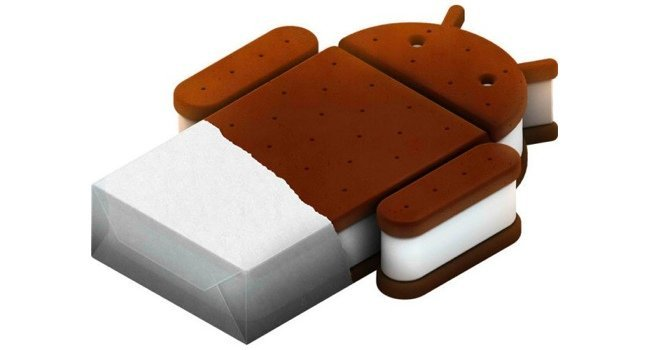
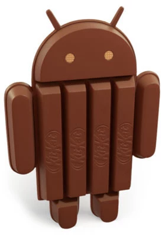
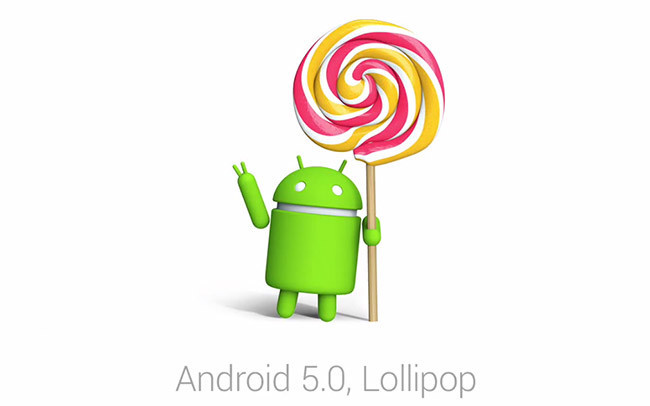
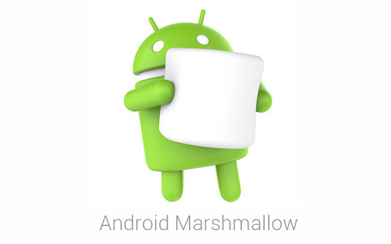
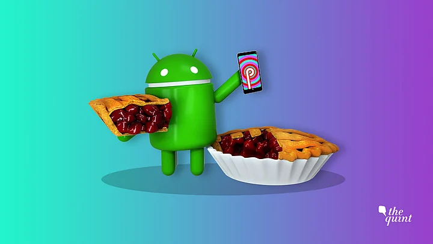
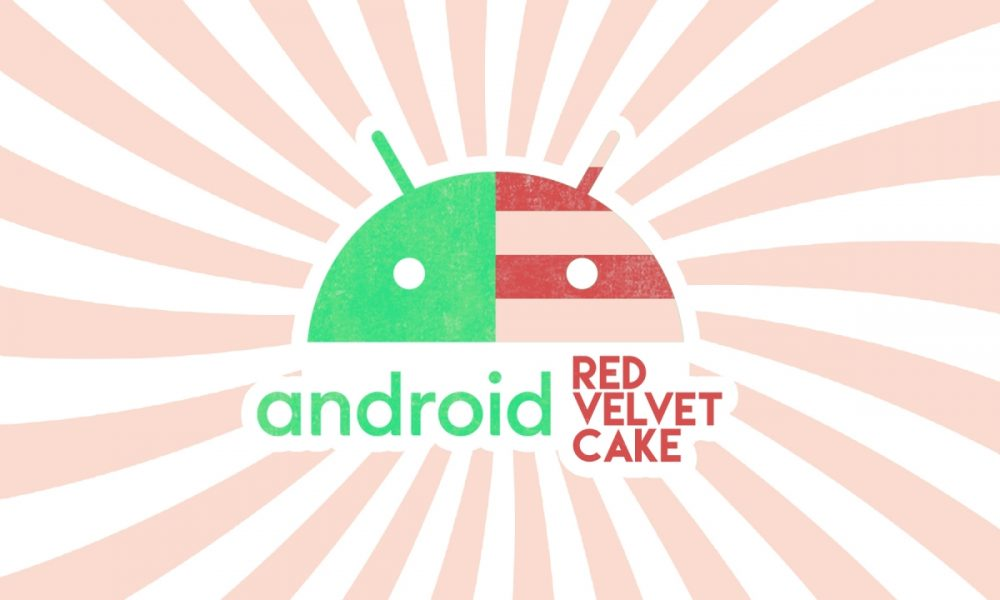
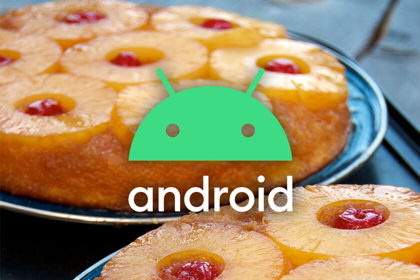
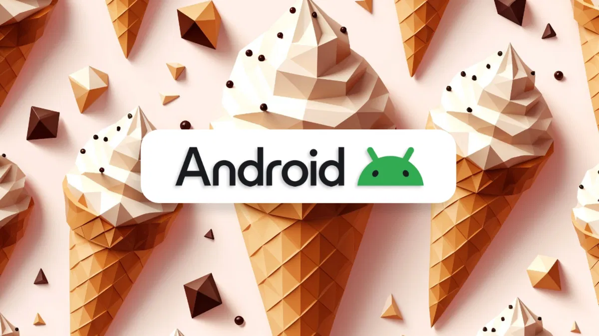
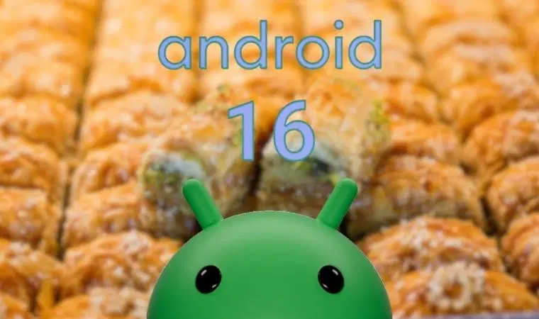

26 de octubre de 2009
Android Eclair

20 de mayo de 2010
Android Froyo
6 de diciembre de 2010
Android Gingerbread
22 de febrero de 2011
Android Honeycomb

18 de octubre de 2011
Android Ice Cream Sandwich

9 de julio de 2012
Android Jelly Bean

31 de octubre de 2013
Android KitKat

4 de noviembre de 2014
Android Lollipop

5 de octubre de 2015
Android Marshmallow
22 de agosto de 2016
Android Nougat
21 de agosto de 2017
Android Oreo

6 de agosto de 2018
Android Pie
3 de septiembre de 2019
Android 10

8 de septiembre de 2020
Android 11 (Red Velvet Cake)
7 de octubre de 2021
Android 12 (Snow Cone)

15 de agosto de 2022
Android 13

4 de octubre de 2023
Android 14 (Upside Down Cake)

15 de octubre de 2024
Android 15 (Vanilla Ice Cream)

10 de junio de 2025
Android 16 (Baklava)